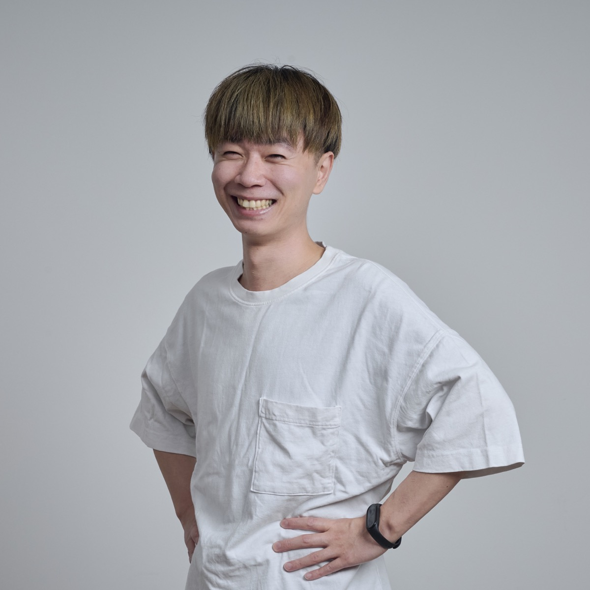

2026.04 – 現在
Webメディア開発
十数個のメディアを一人で運用
十数個のWebメディアの開発・運用を一人で担当。新機能の実装、既存機能の改修、リファクタリング、パフォーマンス改善に加え、フルリプレイスにも携わっています。
既存システムの仕様や技術的負債を整理し、保守性・拡張性を考慮した設計改善を進めています。
HELLO, I'M
Software Engineer
13年間、バリスタとして店舗開発・イベント運営・競技会審査員・専門学校講師・トレーナー・エリアマネージャーを経験。
コロナ禍を機にエンジニアへキャリアチェンジしました。

肥田 康平（KOHE）
エンジニア / バリスタ / 講師
13年のバリスタ経験を持つ、ソフトウェアエンジニアです。
バリスタとして、店舗開発、イベント運営、ドリンクレシピの作成、品質管理、競技会の審査員、専門学校講師、トレーナー、エリアマネージャーを経験してきました。店舗開発では、オペレーション設計、店内レイアウト、スタッフのマネジメント、新規店舗の立ち上げ、商業施設との折衝まで担当。
専門学校では、中学生向けの体験授業から社会人向けの授業まで担当。年間カリキュラムの作成やイベント運営にも携わりました。
コロナ禍をきっかけに、2022年からエンジニアへ転身。AI予測サービスの運用を入口に、toBの業務システムや官公庁系システムの設計・開発を経験。コミュニケーション力を評価していただき、早い段階からリーダーやPL・EMとして、メンバーのマネジメント、顧客や他チームとの調整も担当。
現在は、十数個のWebメディアの開発・運用を一人で担当。新機能開発、改修、リファクタリング、パフォーマンス改善、フルリプレイスまで、サービスを継続して育てる仕事に取り組んでいます。技術コミュニティでは、カンファレンスのスタッフとして運営にも携わっています。
2026.04 – 現在
Webメディア開発
十数個のWebメディアの開発・運用を一人で担当。新機能の実装、既存機能の改修、リファクタリング、パフォーマンス改善に加え、フルリプレイスにも携わっています。
既存システムの仕様や技術的負債を整理し、保守性・拡張性を考慮した設計改善を進めています。
2024.01 – 2026.03
受託開発
PL兼開発として、官公庁の文書管理システムを担当。要件整理、React / TypeScriptによる実装、テスト設計、成果物のレビューに加え、3拠点での進捗共有、メンバーのマネジメント、スクリプトによる業務改善にも取り組みました。新卒研修や若手メンバーの育成・教育も担当しました。
EMとして、生命保険の業務システム刷新を担当。スクラムでの開発に加え、新規参画者への説明、チケット管理、コード・仕様書のレビュー、他チームや顧客との調整を担当しました。
2022.09 – 2023.12
設計・開発・保守
建機レンタルの請求管理システムで、インボイス対応を含む開発・保守を担当。Javaによる画面・バッチ処理、SQLでの金額集計、帳票作成、テスト設計・実行まで携わりました。
不動産の業務管理システムのリプレイスでは、テストを担当しました。
2022.04 – 2022.06
AI関連サービス
競馬・ボートレースのAI予測アプリで、SQLによる予測出力の確認、バッチ監視、障害の一次対応、問い合わせ対応、定例会の運営を担当。共同運営していた新聞社とのコミュニケーションも担当しました。
製造作業を検知するAIカメラのPoCでは、検知対象の要件調整、教師データ作成、AIエンジニアとの精度調整、テストに携わりました。約100時間の動画から10万枚の画像を使った教師データを作成しました。
2015 – 2021
店舗運営
自家焙煎店の店長、カフェでの店舗・イベント運営、ドリンクレシピ開発、新人研修、品質管理を経験。その後、エリアマネージャーとして3店舗の立ち上げとマネジメント、採用面接、国内外のメディア取材対応を担当しました。コロナ禍の不安定な時期には、商業施設との折衝も担当しました。
2012.04 – 2015.03
講師・アシスタント
カフェ・バリスタ領域のドリンク授業、店舗実習、卒業制作展、イベント出店を担当。自身も競技会に挑戦し、国内の最前線で得た知識や技術を授業に反映していました。外部講師や他コースとの調整、カリキュラム作成、学生面談にも携わりました。
高校生向けの体験授業、専門学校での授業、社会人向けの授業を担当しました。
2009.04 – 2012.03
バリスタ
カフェの専門課程で学んだ後、バリスタとして勤務。イタリア人のオーナーパティシエとともに店舗運営に携わりました。
Java / Spring Boot / React / TypeScript / JavaScript / SQL / GitHub / AWS / Google Cloud / Azure DevOps
基本・詳細設計、画面・バッチ実装、帳票作成、テスト設計、コードレビュー。障害調査、バッチ監視、チケット管理、シェルスクリプトやマクロによる業務改善。
PL / EM
新規参画者の受け入れ、メンバーのマネジメント、進捗管理、顧客・他チームとの調整。スクラムとウォーターフォールの両方を経験。
授業運営 / スタッフ育成 / 店舗立ち上げ
年間カリキュラム作成、学生面談、進路面談、品質管理、オペレーション作成、商品開発、採用面接、イベント運営
TECH COMMUNITY
技術コミュニティでは、コアスタッフや当日スタッフとしてカンファレンスに関わっています。
COFFEE
競技会には選手として出場。バリスタ、ハンドドリップ、ラテアートの各競技会では審査員も務めてきました。
2015JAPAN AEROPRESS CHAMPIONSHIP2位大会レポートを見る（Good Coffee）
エンジニアとして開発を続けながら、DevRelやVPoEなど、技術と組織をつなぐ仕事にも関心があります。
9年間、教育に携わる中で、授業は教える側だけが準備するものではなく、学生と一緒に授業の内容を楽しめるかどうかが大切だと実感しました。
飲食の現場でのスタッフ育成、講師としての授業、開発チームでのマネジメントを通じて、人が学び、協力して働く場に関わってきました。